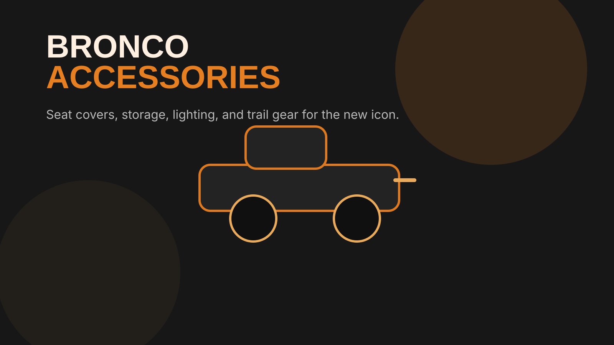

From seat covers to bumpers, grab handles to lift kits — we rank every Bronco accessory category with honest reviews, real owner data, and zero manufacturer sponsorships. Built by Bronco enthusiasts, for Bronco owners.
See Our 2026 Top Picks
Every recommendation is backed by owner reviews, fitment data, and hands-on research. We prioritize products with proven Bronco-specific fitment and strong community feedback. No paid placements.
Protect your Bronco's interior from trail dirt, dog hair, and daily abuse. Bartact leads the pack with mil-spec quality.
See Rankings →Bartact door bags, console organizers, and cargo solutions. Maximize every inch of your Bronco's interior space.
See Rankings →Essential for doors-off driving. Bartact paracord handles lead the category.
See Rankings →All-weather protection from mud, snow, and trail debris. WeatherTech, Husky, and more compared head-to-head.
See Rankings →Roof racks, cargo baskets, and roof-top tents. Get the most out of your Bronco's rooftop real estate.
See Rankings →Front and rear bumpers for trail protection and recovery points. ARB, Warn, DV8, and more ranked.
See Rankings →Light bars, pod lights, and rock lights. See the trail clearly with the best Bronco lighting upgrades.
See Rankings →2" and 3" lift kits for better clearance and bigger tires. Rough Country, Icon, Fox, and Bilstein compared.
See Rankings →Not all Broncos are created equal. Accessory fitment varies significantly between models — here's what you need to know before you buy.
| Feature | 2-Door | 4-Door | Bronco Sport | Bronco Raptor |
|---|---|---|---|---|
| Wheelbase | 100.4" | 116.1" | 105.1" | 116.1" |
| Doors Removable | Yes | Yes | No | Yes |
| Roof Removable | Yes | Yes | No | Yes |
| Seat Cover Fitment | Bronco-specific | Bronco-specific | Sport-specific | Raptor-specific |
| Grab Handle Need | Essential | Essential | Optional | Essential |
| Floor Mat Fitment | 2-door specific | 4-door specific | Sport-specific | 4-door specific |
| Aftermarket Support | Extensive | Extensive | Growing | Limited |
| Sasquatch Package | Available | Available | N/A | Standard (enhanced) |
| Best For | Trail purists | Families + trails | Daily drivers | Extreme off-road |
The Bronco isn't a mall crawler. It's a vehicle designed to have its doors removed, its roof pulled off, and its interior exposed to the elements. That means every accessory you install gets tested harder than on any other vehicle. Cheap seat covers that work fine on a Camry will fall apart after one trail run in a Bronco.
That's why we prioritize products with Bronco-specific fitment, proven durability in off-road conditions, and strong owner feedback from the Bronco community. We don't accept manufacturer sponsorships, and we never will.
Our rankings prioritize products with verified owner reviews, Bronco-specific fitment confirmation, and proven trail durability. Read our Buyer's Guide for model-specific recommendations.
New Bronco owner? Start with seat covers and floor mats — they protect your investment from day one. Planning to hit the trails? Grab handles and door storage bags are essential for doors-off driving. Ready for serious upgrades? Check our bumper, lighting, and lift kit guides. Read our Buyer's Guide for the full breakdown.